Algorithms
2024-12-11
Examples of algorithms
There are hundreds of machine learning algorithms.
Here we provide a few examples spanning rather different approaches.
We will use the
mnist_27dataset from dslabs.
Logistic regression
- We previously used linear regression to predict classes by fitting the model:
\[ p(\mathbf{x}) = \mbox{Pr}(Y=1 \mid X_1=x_1 , X_2 = x_2) = \beta_0 + \beta_1 x_1 + \beta_2 x_2 \]
- We used least squares after assigning numeric values of 0 and 1 to \(y\), and used
lmas if the data were continuous.
Logistic regression
- An obvious problem with this approach is that \(\widehat{p}(\mathbf{x})\) can be negative and larger than 1:
Logistic regression
- To avoid this, we can apply an approach more appropriate for binary data:
\[ \log \frac{p(\mathbf{x})}{1-p(\mathbf{x})} = \beta_0 + \beta_1 x_1 + \beta_2 x_2 \]
Logistic regression
We can use the glm function to fit the model:
fit_glm <- glm(y ~ x_1 + x_2, data = mnist_27$train, family = "binomial")
p_hat_glm <- predict(fit_glm, mnist_27$test, type = "response")
y_hat_glm <- factor(ifelse(p_hat_glm > 0.5, 7, 2))
confusionMatrix(y_hat_glm, mnist_27$test$y)$overall["Accuracy"]Accuracy
0.775 - We see that logistic regression performs similarly to regression.
Logistic regression
- This is not surprising given that the estimate of \(\widehat{p}(\mathbf{x})\) looks similar:
Logistic regression
- Just like regression, the decision rule is a line:
\[ g^{-1}(\widehat{\beta}_0 + \widehat{\beta}_1 x_1 + \widehat{\beta}_2 x_2) = 0.5 \implies\\ \widehat{\beta}_0 + \widehat{\beta}_1 x_1 + \widehat{\beta}_2 x_2 = g(0.5) = 0 \implies \\ x_2 = -\widehat{\beta}_0/\widehat{\beta}_2 -\widehat{\beta}_1/\widehat{\beta}_2 x_1 \]
Generative models
- With binary outcomes the smallest true error we can achieve is determined by Bayes’ rule, which is a decision rule based on the true conditional probability:
\[ p(\mathbf{x}) = \mbox{Pr}(Y = 1 \mid \mathbf{X}=\mathbf{x}) \]
- We have described approaches to estimating \(p(\mathbf{x})\).
Generative models
In all these approaches, we estimate the conditional probability directly and do not consider the distribution of the predictors.
These are referred to as discriminative approaches.
However, Bayes’ theorem tells us that knowing the distribution of the predictors \(\mathbf{X}\) may be useful.
Methods that model the joint distribution of \(Y\) and \(\mathbf{X}\) are referred to as generative models
We model how \(Y\) and \(\mathbf{X}\) are generated.
Naive Bayes
- Recall that Bayes rule tells us that we can rewrite \(p(\mathbf{x})\) as follows:
\[ p(\mathbf{x}) = \mbox{Pr}(Y = 1|\mathbf{X}=\mathbf{x}) = \frac{f_{\mathbf{X}|Y = 1}(\mathbf{x}) \mbox{Pr}(Y = 1)} { f_{\mathbf{X}|Y = 0}(\mathbf{x})\mbox{Pr}(Y = 0) + f_{\mathbf{X}|Y = 1}(\mathbf{x})\mbox{Pr}(Y = 1) } \]
- with \(f_{\mathbf{X}|Y = 1}\) and \(f_{\mathbf{X}|Y = 0}\) representing the distribution functions of the predictor \(\mathbf{X}\) for the two classes \(Y = 1\) and \(Y = 0\).
Controlling prevalence
One useful feature of the Naive Bayes approach is that it includes a parameter to account for differences in prevalence.
Using our sample, we estimate \(f_{X|Y = 1}\), \(f_{X|Y = 0}\) and \(\pi\).
If we use hats to denote the estimates, we can write \(\widehat{p}(x)\) as:
\[ \widehat{p}(x)= \frac{\widehat{f}_{X|Y = 1}(x) \widehat{\pi}} { \widehat{f}_{X|Y = 0}(x)(1-\widehat{\pi}) + \widehat{f}_{X|Y = 1}(x)\widehat{\pi} } \]
- We can change prevalence by pluggin in other values instead of \(\widehat{\pi}\)
Naive Bayes
If we can estimate these conditional distributions of the predictors, we can develop a powerful decision rule.
However, this is a big if.
When \(\mathbf{X}\) has many dimensions and we do not have much information about the distribution, Naive Bayes will be practically impossible to implement.
However, with a small number of predictors and many categories generative models can be quite powerful.
Quadratic discriminant analysis
Quadratic Discriminant Analysis (QDA) is a version of Naive Bayes in which we assume that the distributions \(p_{\mathbf{X}|Y = 1}(x)\) and \(p_{\mathbf{X}|Y = 0}(\mathbf{x})\) are multivariate normal.
The simple example we described in the previous section is actually QDA.
Let’s now look at a slightly more complicated case: the 2 or 7 example.
In this example, we have two predictors so we assume each one is bivariate normal.
Quadratic discriminant analysis
- We can estiamte the paramters from the data:
Quadratic discriminant analysis
- With these estimates in place, all we need are the prevalence \(\pi\) to compute:
\[ \widehat{p}(\mathbf{x})= \frac{\widehat{f}_{\mathbf{X}|Y = 1}(\mathbf{x}) \widehat{\pi}} { \widehat{f}_{\mathbf{X}|Y = 0}(x)(1-\widehat{\pi}) + \widehat{f}_{\mathbf{X}|Y = 1}(\mathbf{x})\widehat{\pi} } \]
Quadratic discriminant analysis
Here is the fitted model:
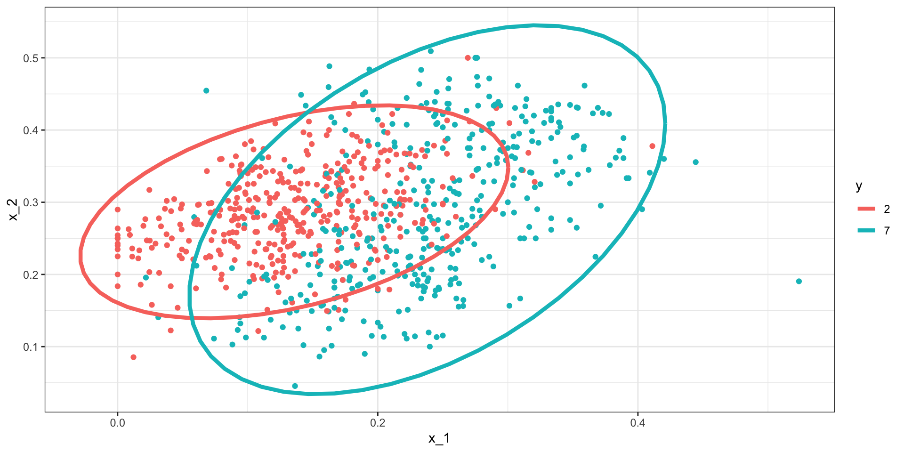Quadratic discriminant analysis
- We can fit QDA using the
qdafunction the MASS package:
- We see that we obtain relatively good accuracy:
Quadratic discriminant analysis
- The conditional probability looks relatively good, although it does not fit as well as the kernel smoothers:
Quadratic discriminant analysis
- One reason QDA does not work as well as the kernel methods is because the assumption of normality does not quite hold:
Quadratic discriminant analysis
QDA can work well here, but it becomes harder to use as the number of predictors increases.
Here we have 2 predictors and had to compute 4 means, 4 SDs, and 2 correlations.
Notice that if we have 10 predictors, we have 45 correlations for each class.
The formula is \(K\times p(p-1)/2\), which gets big fast.
Once the number of parameters approaches the size of our data, the method becomes impractical due to overfitting.
Linear discriminant analysis
A relatively simple solution to QDA’s problem of having too many parameters is to assume that the correlation structure is the same for all classes.
This reduces the number of parameters we need to estimate.
Linear discriminant analysis
The estimated distribution look like this:
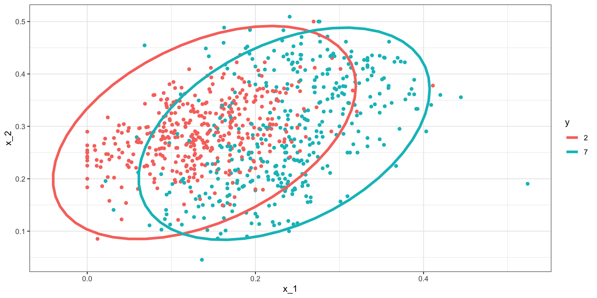Linear discriminant analysis
- We can LDA using the MASS
ldafunction:
- This added constraint lowers the number of parameters, the rigidity lowers our accuracy to:
Linear discriminant analysis
In fact we can show that the boundary is a line:

Connection to distance
- The normal density is:
\[ f(x) = \frac{1}{\sqrt{2\pi} \sigma} \exp\left\{ - \frac{(x-\mu)^2}{\sigma^2}\right\} \]
- If we remove the constant \(1/(\sqrt{2\pi} \sigma)\) and then take the log, we get:
\[ \frac{(x-\mu)^2}{\sigma^2} \]
Connection to distance
- Note this ithe negative of a distance squared scaled by the standard deviation.
\[ \frac{(x-\mu)^2}{\sigma^2} \]
- For higher dimensions, the same is true except the scaling is more complex and involves correlations.
CART
Anything based on distance or distributions will face the course of dimensionality
In high dimensions the nearest neighbors will actually define a large region.
This makes it hard to estimate local non-linearities.
Regression trees use a completely different approach: directly partition the prediction space.
CART motivation
- To motivate this section, we will use a new dataset:
CART motivation
- We try to predict the region using the fatty acid composition:
- We remove the
areacolumn because we won’t use it as a predictor.
CART motivation
- Using kNN, we can achieve the following accuracy:
CART motivation
- However, a bit of data exploration reveals that we should be able to do even better:
CART motivation
- We should be able to predict perfectly:
CART motivation
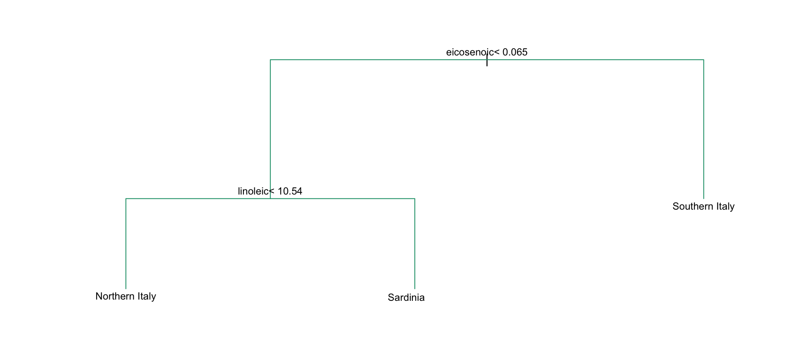CART motivation
- Decision trees like this are often used in practice.

Regression trees
When using trees, and the outcome is continuous, we call the approach a regression tree.
To introduce regression trees, we will use the 2008 poll data used in previous sections to describe the basic idea of how we build these algorithms.
As with other machine learning algorithms, we will try to estimate the conditional expectation \(f(x) = \mbox{E}(Y | X = x)\) with \(Y\) the poll margin and \(x\) the day.
Regression trees
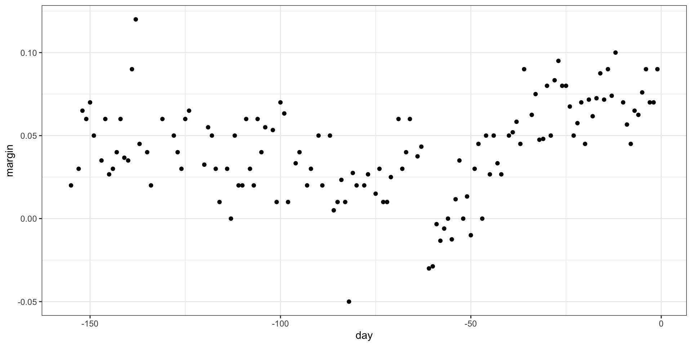Regression trees
This fits the model:
There are rules to decide when to stop.
Regression trees
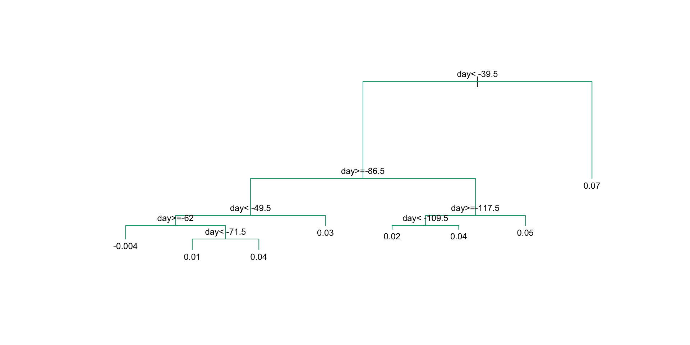Regression trees

Regression trees
- If we let it go to the end we get:
Regression trees
- Picking the parameters that controls when to stop:
Regression trees
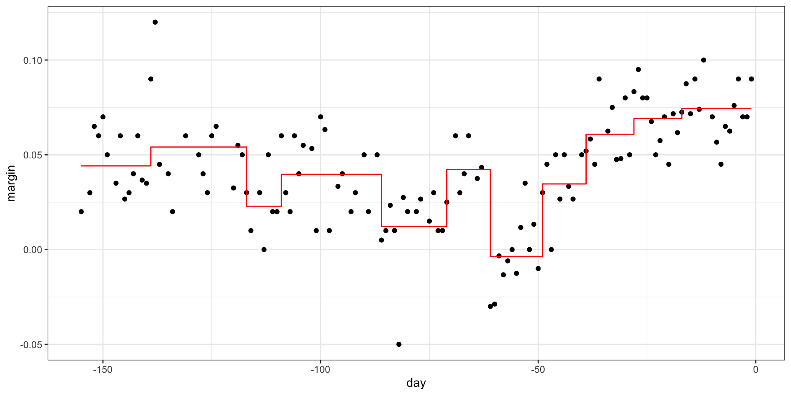Regression trees
- We can also prune:
Classification (decision) trees
- Apply it to 2 or 7 data:
Classification (decision) trees
Here is the estimate of \(p(\mathbf{x})\):
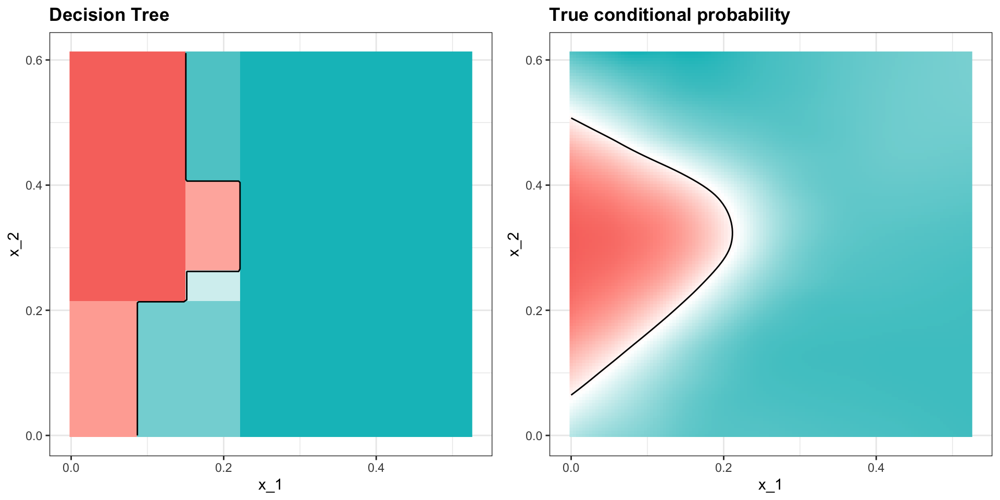Random forests
- Apply it to the polls data:
Random forests
How many trees?
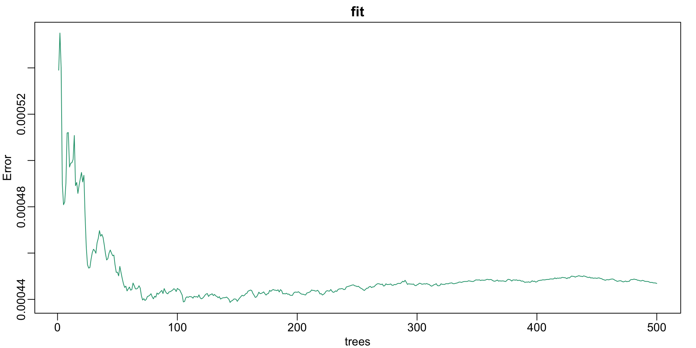Random forests
- The resulting estimate is obtained with:
Random forests
Final estimate:
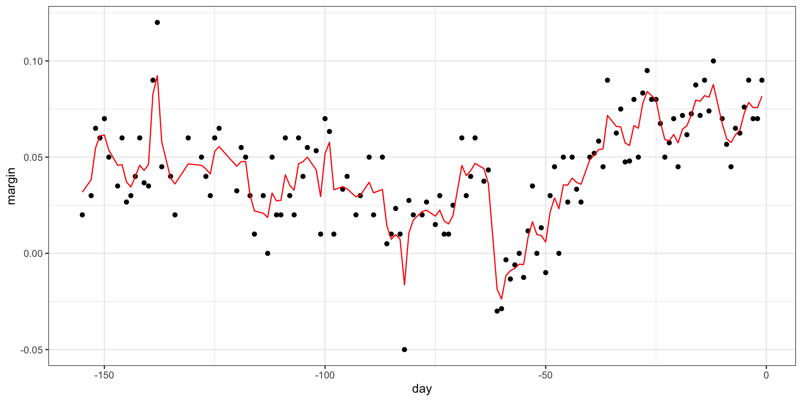Random forests

Random forests
Apply it to 2 or 7 data:
Random forests
Here is the estimate of \(p(\mathbf{x})\):
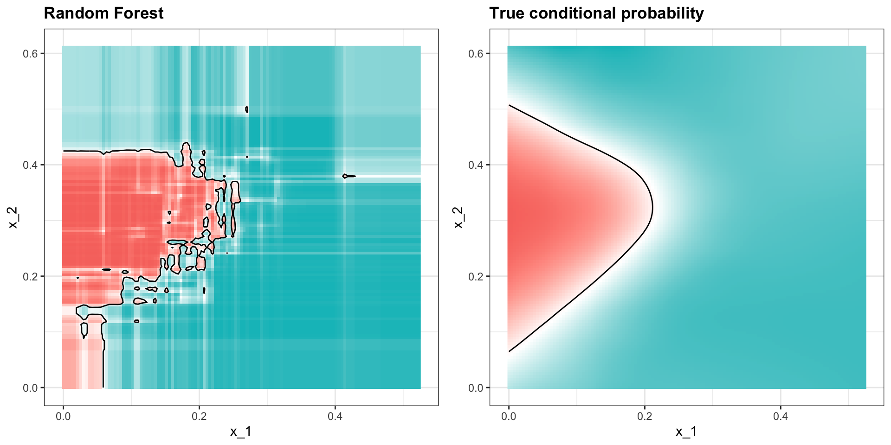Random forests
We increase smoothness with the nodesize parameter:
Random forests
This provides a better estimate:
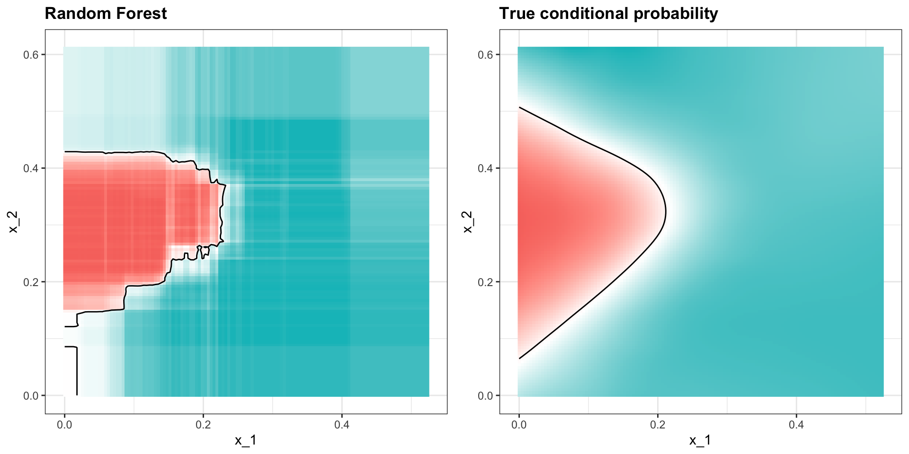